LINE 商家貼文・地圖那兩張 2026-09-08 停車那張定稿；第三部分是「怎麼到斗六」的路線圖，還沒定案
主頁「最新貼文」那三格的小格左。
地圖、提醒、三張停車場卡全部是門口那張 A4 告示本人——產生器把
drafts/door-notice/ 跑起來，再把它的東西讀進 1080 的方畫布，
旋轉、街名重排、路線圓點、指北針一個字都沒有重做。
你挑定的：不放 QR・拿掉「紅線」「開單」那兩句・
下排字 ×1.30 折行・指北針 Ⓝ3・留白 Ⓜ3・
浮水印 4%・站上頁首那顆・壓左上、再往左 440px（Ⓧ2）・不加標題。
⭐ 要貼的檔案是 fangren-map-1080.png（1080×1080）。
⚠ 第三部分是另一張圖（給外縣市看的路線圖），和這一張回答的是不同的問題，
還在挑。
⭐ 定稿fangren-map-1080.png1080×1080 這一張就是要貼的
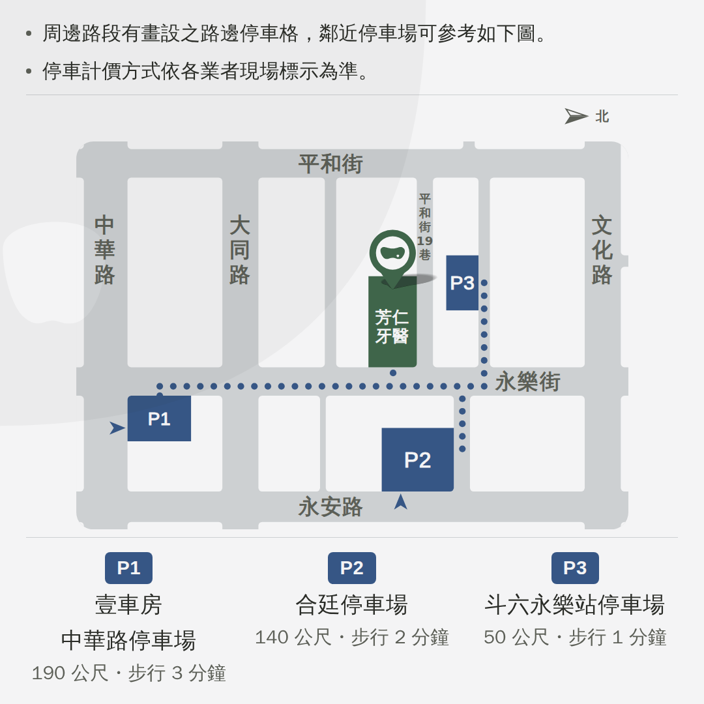
兩句一走、三顆碼一走，那些高度全部給了地圖：
460 → 848px，左右已經頂到版面的內距（各 40px）。
⚠ 指北針收到最小那一格之後，那張圖又瘦了一點（長寬比 1.283 → 1.292），
所以同樣的高度放得下更寬的圖：840 → 848px。
⚠ 綠塊裡是「芳仁牙醫」不是門口那張的「現在位置」——
看貼文的人不在那裡，那四個字會被讀成「你現在的位置」。
下排 名 34 → 小格 12.9px 距 29 → 11.0px（兩行第一次都過 10px）
提醒 30 → 小格 11.4px 地圖上的街名 32 → 12.2px
指北針 整組高 68.4 → 小格 26.0px 「北」19.7 → 7.5px
⚠ 「北」在 10px 以下是刻意的：那個字不必讀、形狀認得出來就好 （旁邊還有箭頭）。那條 10px 的線是給要讀完的字的，不是給記號的。
浮水印 畫出來 952×469・墨 4.0%・左邊切掉 440px（看得到 512 → 小格 194px）
壓在它上面：墨字 11.95／柔墨 5.68（門檻 4.5）
在主頁上長怎樣大格＝看診時間（已定稿）／小格左＝這一張

⚠⚠ 這一張不能放大格：大格只看得到中間 537 列，
這一張的內容佔 27~1053——上下都會被切掉。
⚠ 小格右那一格還沒做（主題與科別七科）。
⚠⚠ 在小格的實際大小（410px）這一排才是判準

上面每一個數字都是量這個尺寸得來的。 這是真的 410px，不是縮圖——手機上看到多大，主頁上就多大。
拿掉的是這兩句門口那張告示本人一個字都沒有動
門口那張是給車已經停好、站在門口的人看的，這兩句擋的是「就停一下」；
看貼文的人還沒出門，同一句話讀起來是「這間診所門口會被開單」＝ 警告不是幫忙。
⚠ 留下來的兩句（有停車格／計價依現場標示）對兩種人都成立。
「詳情」那一欄要貼的字⚠ 這裡才是 QR 在 LINE 上的替代品
兩句提醒逐字取自門口那張（紅線與開單那兩句已經跟著圖一起拿掉）；
三條網址逐字取自 index.html 地圖上那三個連結
（你自己分享過、驗證會開對地方的那三條），
順序照你排的 P1／P2／P3（刻意不是照距離）。
⚠⚠⚠ 三顆 QR 已經拿掉了，而看貼文的人正拿著那支手機、掃不了自己螢幕上的碼——
這三條可以點的網址才是它在 LINE 上真正的替代品。
⚠ 「可參考如下圖」指的是貼文上面那張圖，成立；
所以圖裡的版面鎖住「文字在上、地圖在下」，不要把地圖搬到旁邊或最上面。
⚠⚠ 不可以寫「有問題留言問我們」那一類的話（這個帳號沒有專人即時回覆）。
還開著的兩件
① 小格右那一格（主題與科別七科）還沒做——七張分享圖現成，
但都是 1.91:1，要重裁成方的。
② 小格到底是不是照這樣裁——在後台按一次「預覽」就知道，我們是照 410×410 推的。
三、給外縣市／鄰近鄉鎮看的路線圖2026-09-08 第五版，還沒定案
你拿 Google 地圖的實景和 MIHO 自己那張示意圖對照，說 「實際和示意圖的平衡度沒抓好」——逐項比過之後，你是對的， 而且我兩邊都沒站到：幾何太老實，畫法太簡陋。
| MIHO 那張示意圖 | 我的第三版 | |
|---|---|---|
| 誰最粗 | 要走的那條路線（暗紅），高速公路是幾乎看不見的米色細線 | ⚠ 國道１號 15px 的粗藍線，綠色路線只有 5.5 |
| 路線編號 | 畫在線上的六角形號碼牌（12／16／307／422） | ⚠ 沒有，全是「縣道１５４乙」這種一百多 px 的長字串 |
| 地標 | ■ ＋ 名字，六個，散在整張圖上 | ⚠ 只有車站一個，中間一大片空 |
| 面 | 琵琶湖一大塊淡藍 —— 整張圖唯一的「地方」 | ⚠ 一小塊沒有名字的灰方塊 |
| 路線的完整度 | 四個交流道全部用紅線接到美術館 | ⚠ 只有斗六交流道那一條，斗南那一側是灰的、斷的 |
| 浮在圖上的文字方塊 | 一個都沒有（「平野」「牧」直接寫在路邊） | ⚠ 左下角一塊白牌子 —— 那是簡報的語彙 |
⚠⚠⚠ 反過來，幾何我又太老實：四個公家機關照量到的座標畫， 彼此只差 24~330 公尺，全部疊在診所那塊牌子底下，所以我把它們整組拿掉、 畫面就更空了。MIHO 那張的東西是散開的 —— 它散得開，是因為它敢把位置畫成示意的。
⚠⚠⚠ 第五版：整張圖不再是同一個比例尺要挑近的放大、遠的收起來
你說「地圖是示意圖，不需要整張地圖都維持同樣的比例尺 —— 近一點的地標、公家機關比例尺可以變大一點，這樣才畫得下；遠一點例如國道交流道 縮小一點，不然會拉很長」。做了，而且它把上面那面「幾何硬牆」拆掉了： 那四個公家機關現在是圖上真的點，不是一行附註。
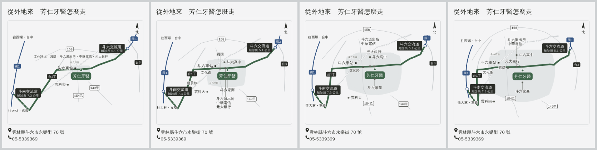
在小格 410px 的真實大小並排：左起整張同一個比例尺／
放大 2／3／4 倍。
⚠ 判準就在這一張 —— 1080 的原圖上四格都讀得出來，
410px 上只有放大過的那幾格看得到那四個公家機關。
⭐ 建議：近處放大 4 倍far-w4＋ 上面那把尺的「偏示意」
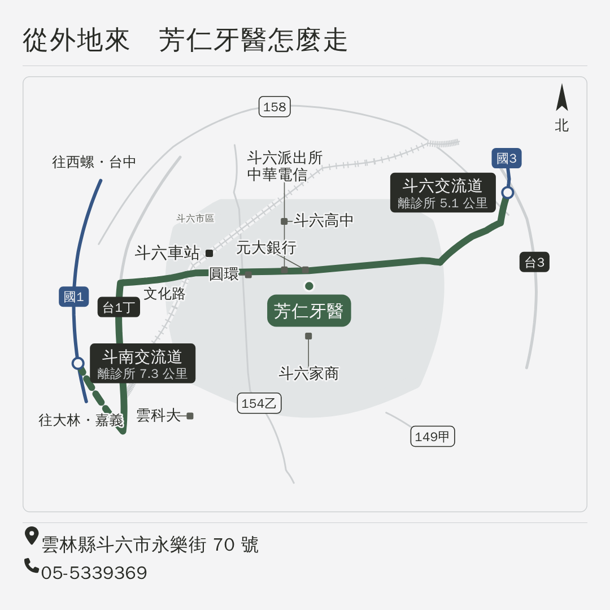
做法是：以診所為圓心，只改「離診所多遠」，一點都不改方位。
⚠⚠⚠ 這件事要講清楚，因為它決定這張圖誠不誠實：
每一個地標的方位一度都沒有變（兩個交流道仍然一個在東北一個在西南、
鐵路仍然北偏東 53 度、四個公家機關仍然在文化路上由西往東排）。
被動到的只有「離診所多遠」，而那件事圖上本來就有兩塊牌子印著真實公里數
（5.1／7.3 公里，那兩個數字是從座標算的、沒有被放大）。
倍率是一段一段遞減的：0~700 公尺放大 4 倍、
700~2200 公尺 ×1.04、再外面 ×0.27，
而且斗六交流道釘在原地——所以近處撐開多少、遠處就等量收回來多少，
整張圖的外框幾乎不動，斗南交流道那條長腿也就不會再拉很長
（7.3 公里畫得像 5.7 公里）。
⚠ 倍率一段比一段小 ＝ 不會反折，所以不會有兩個地方被畫到疊在一起。
放大到 6 倍以上外圈的斜率會塌成 0（兩條連外道路會黏成一條），產生器直接停下來不畫。
⚠⚠ 還是有兩個永遠分不開那不是偷懶，是那一組座標的必然
斗六派出所與中華電信實地只差 24 公尺、方位也只差 4 度。
放大的是「離診所多遠」，不是「彼此多遠」——所以任何一種以診所為圓心的放大都分不開它們
（放大 4 倍之後仍然只差 5px）。
→ 畫成一顆 ■、名字疊成兩行。合併的規則寫死成「畫出來相距不到 22px 就併，
由遠到近」——那是一條講得出來的規則，不是看哪一個先被讀到。
⚠ 被擠遠的名字都拉一條細線回它自己那顆 ■：這一版第一次出圖時
「斗六派出所／中華電信」被推到 90px 外、正好落在鐵路旁邊，讀起來像在標鐵路。
放大 3 倍far-w3
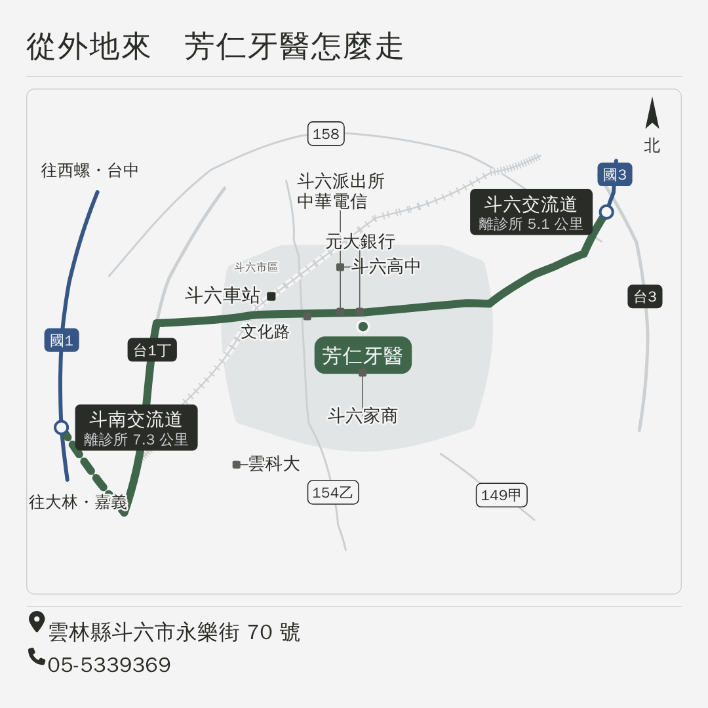
放大 2 倍far-w2元大銀行會被併進那一顆
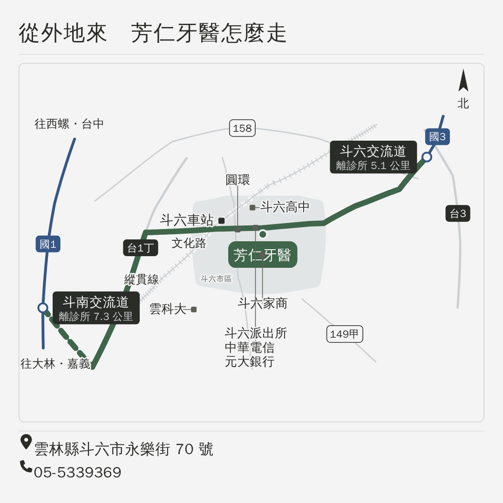
⚠ 倍率愈低，被併掉的愈多：2 倍時元大銀行也擠進同一顆， 變成三個名字疊三行。那一格看得出這把尺在買什麼。
另一把尺：「實際 ↔ 示意」的畫法要挑第四版那把，三格都是等比例
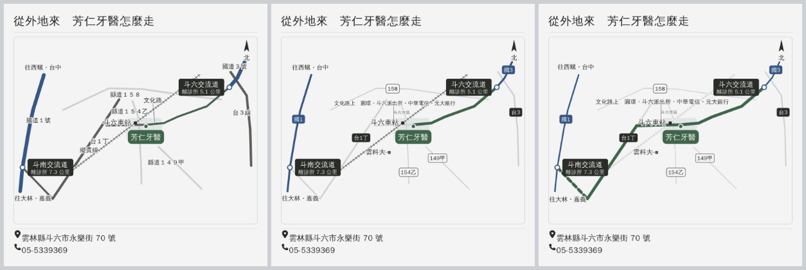
在小格 410px 的真實大小並排：左＝偏實際、中＝中間、右＝偏示意。
⚠ 這一張是判準 —— 主頁上那一格就是這麼大，不要只看下面 1080 的原圖。
畫法的建議格：偏示意far-schema＝上面 ⭐ 那張用的畫法，但整張同一個比例尺
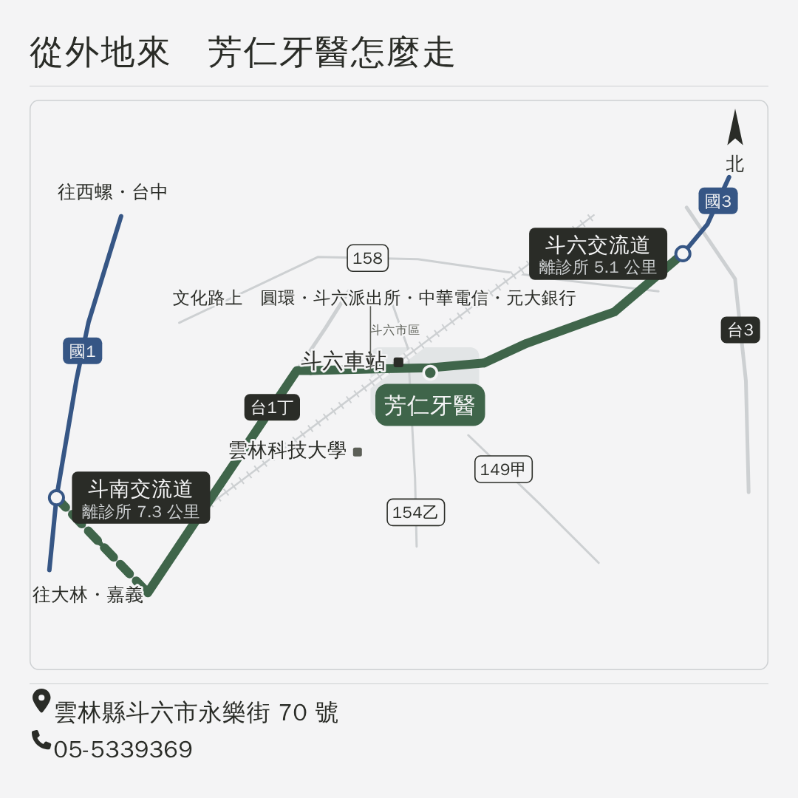
四件改動，每一件都對著上面那張表的一列：
① 路線最粗（12），國道退成 6 的細線。MIHO 那張的高速公路是背景、路線才是主角。
② 兩個交流道都拉綠線——「從南邊來」和「從北邊來」各有一條，
在小格上那個「Ｖ 字收進診所」的形狀就是這張圖唯一要說的話。
⚠⚠⚠ 斗南那一小段畫成虛線：接到台１丁的那一段截圖上沒有，是我示意畫的
——虛線的意思就是「這一段是大概的」，不要改成實線。
⚠⚠ 而台１丁和文化路本來沒有共用的節點（直接兩段都塗綠就是兩截綠線）。
做法不是自己補一條連接線，是算出它們的交點：台１丁在文化路那條緯度上
穿過 x ≈ −2455，離文化路西端只有 255 公尺。
交點是從兩條量過的折線推出來的，不是擺的。
③ 號碼牌取代長路名（國道＝路牌藍底白字／省道＝墨底白字／縣道＝白底墨字）。
一塊 40px 的牌子換掉一串 100px 的字，而且它貼在線上、不必猜在講哪一條。
⚠ 形狀一律圓角方牌，沒有假裝是官方的盾形或六角形。
④ 市區那一塊有名字了、雲林科技大學回到圖上。
中間far-mid同樣的畫法，但只標斗六交流道那一條

和建議那一格只差三件：斗南那一側不拉綠線（因為那一段是示意的）、 國道粗一點、鐵路深一點。如果你覺得「虛線也不想畫」，就選這一格。
偏實際far-real＝第三版的畫法，留著當對照
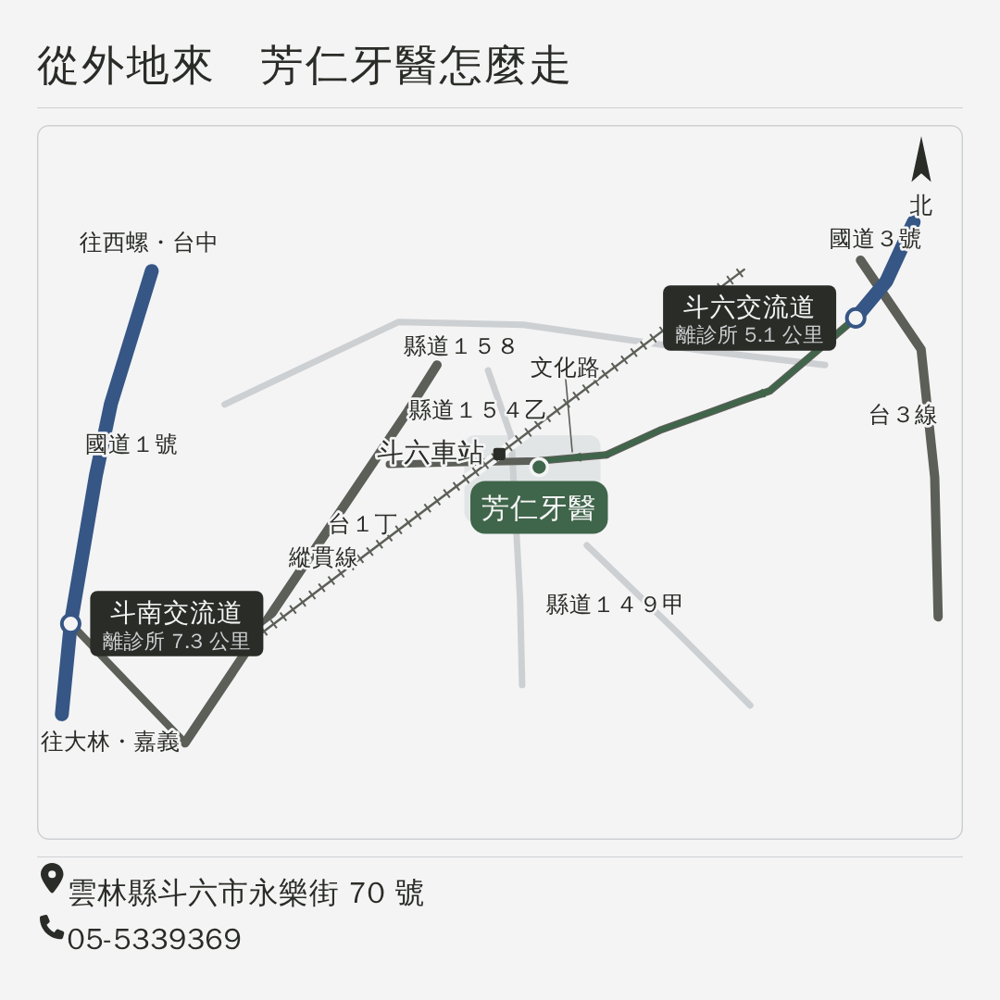
粗細照道路等級（國道最粗）、沒有號碼牌、沒有地標、路名全是長字串。 這一格最像一張「資料正確的圖」，也最不像一張「給人看的圖」。
⚠⚠⚠ 你點名的地標，這一版全部在圖上了
| 地標 | 實地離診所 | 這一版畫成 | 小格 410px 上離診所 | 畫在哪裡 |
|---|---|---|---|---|
| 斗六車站 | 616 公尺 | 畫得像 2464 | 70.7px | 圖上（■） |
| 斗六交流道 | 5140 公尺 | — | 147.5px | 圖上（實心名牌） |
| 斗南交流道 | 7254 公尺 | 畫得像 5706 | 163.8px | 圖上（實心名牌） |
| 斗六高中 | 406 公尺 | 畫得像 1624 | 46.6px | 圖上（■） |
| 雲林科技大學 | 1982 公尺 | 畫得像 4127 | 118.5px | 圖上（■） |
| 圓環 | 362 公尺 | 畫得像 1448 | 41.6px | 圖上（■） |
| 斗六派出所 | 184 公尺 | 畫得像 736 | 21.1px | 圖上（■，和中華電信併成一顆） |
| 中華電信斗六服務中心 | 163 公尺 | 畫得像 652 | 18.7px | 圖上（■，和派出所併成一顆） |
| 元大銀行斗信分行 | 98 公尺 | 畫得像 392 | 11.3px | 圖上（■） |
| 斗六家商 | 293 公尺 | 畫得像 1172 | 33.6px | 圖上（■） |
| 雲林縣政府 | — | — | — | 還沒有座標 |
中間那一欄就是這一版在做的事，兩欄差多少 ＝ 這張圖「示意」了多少，攤在這裡讓你自己看。
⚠ 對照整張同一個比例尺的話，那四個公家機關在小格上離診所只有
2.7／4.5／5.1／10.1px
——四顆黑點會疊在診所那塊綠牌子底下，那正是第四版把它們收成一行字的原因。
這一版拉開成 11.3~41.6px。
⚠⚠ 兩塊交流道名牌上的公里數沒有被放大（5.1／7.3 公里是從座標算的），
所以就算圖上的距離是示意的，讀的人拿到的公里數仍然是真的。
⚠⚠⚠ 那一行沿著文化路的字因此拿掉了——那四個已經是圖上真的點，
再寫一行「文化路上 圓環・斗六派出所…」就是同一件事講兩次。
（等比例那三格還留著它，因為那幾格上它們畫不下。）
在主頁三格上長怎樣大格＝看診時間 小格左＝停車 小格右＝這一張

⚠⚠⚠ 三格已經滿了。小格右原本排給「主題與科別七科」，
所以這一則要放哪一格是你要決定的——見最底下那一題。
⚠ 兩張小圖並排其實很合理：左邊「到了停哪裡」、右邊「怎麼過來」。
⚠⚠ 在小格的實際大小（410px）左 13.6／中 17／右 22 公里

標題 17.5px、地址與電話 12.1px
——這兩樣是小格上真的要讀完的字，都過 10px。
⚠⚠ 地圖裡的字一律小於 10px——那和停車那張是同一個已知取捨：
小格上地圖是一張圖，要讀完的字由標題與頁尾扛。這一張在小格上讀得出來的是
兩塊黑名牌 ＋ 一塊綠牌子 ＋ 那個 Ｖ 字的綠線。
範圍要多大要挑⚠ 這一把只作用在「整張同一個比例尺」那幾格
⚠⚠⚠ 非等比例底下「範圍幾公尺」不再是一個數字（同一張圖上近處是 4 倍、遠處是 0.27 倍），所以放大過的那幾格框是照畫出來的東西自己配的， 不吃這把尺。下面兩格是等比例那一版的範圍。
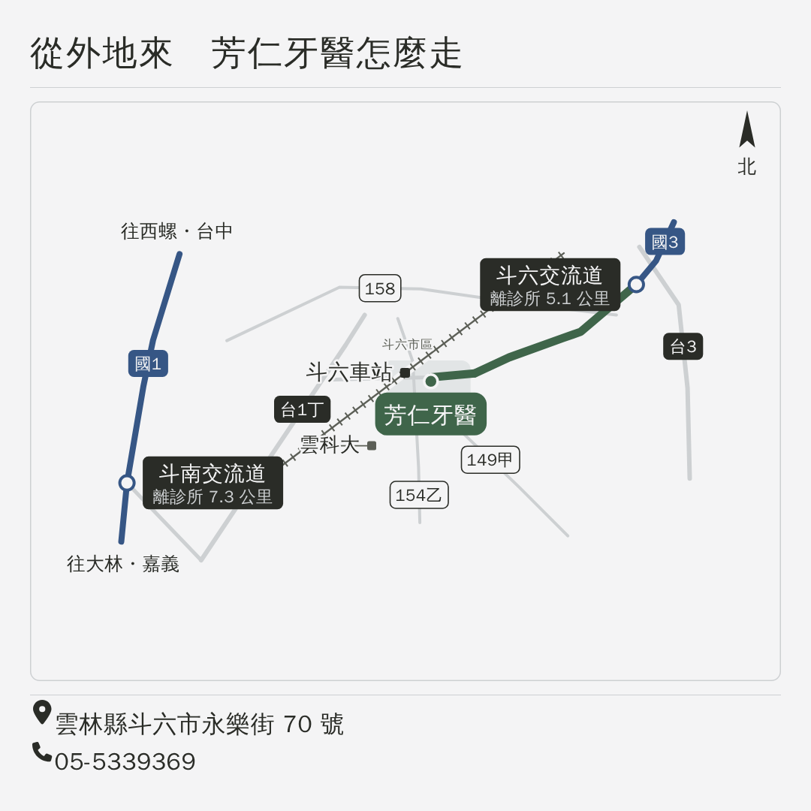
Ⓑ 17 公里：外圍多一點餘裕，代價是中間所有東西一起變小。
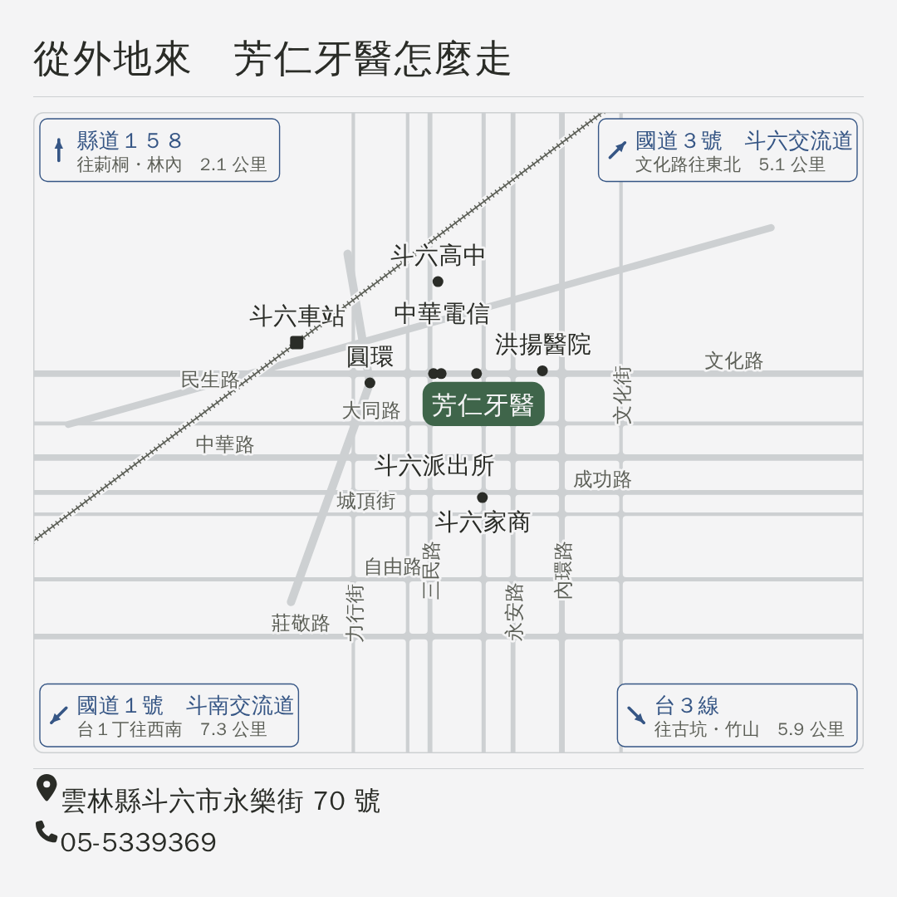
Ⓒ 22 公里：留著當上限的展示，不是候選。
⚠⚠ 下限是 13.6 公里：再收就會把斗南交流道推出框，而產生器會直接停下來
——一張少一個交流道的路線圖是最壞的那一種「看起來很正常」。
字級要挑左小一階／中建議／右大一階
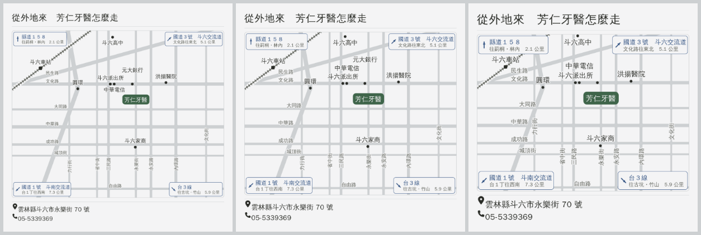


大一階：標題 54／頁尾 38／地圖 34。
小一階：標題 40／頁尾 28／地圖 26——頁尾在小格上剩 10.6px，已經在線上，
這一格是下限不是候選。
其餘幾格要挑
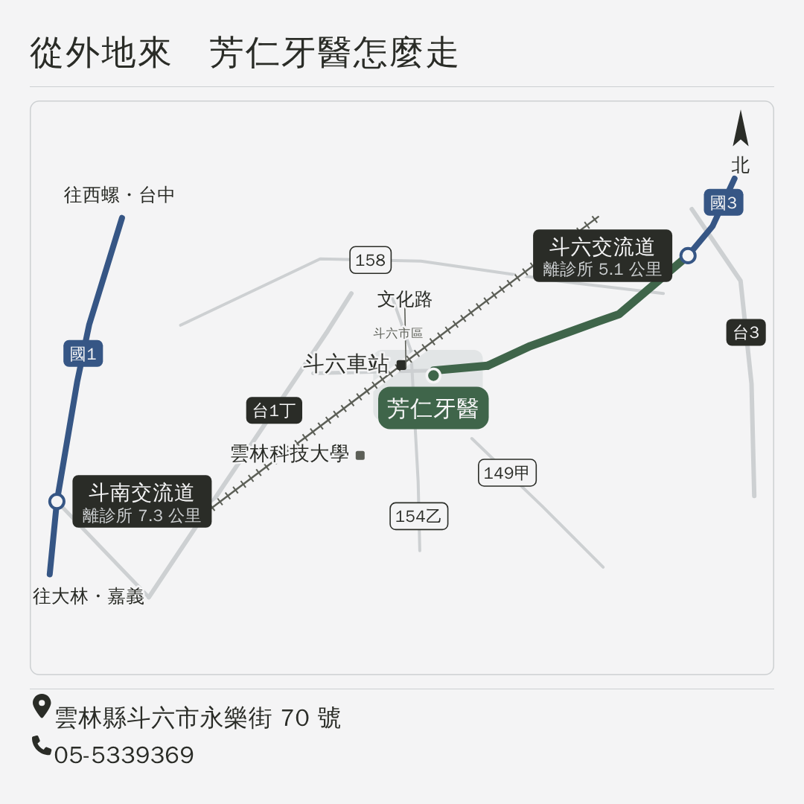
不放文化路那一行（等比例那一版）——那四個公家機關就完全不見了。 ⚠ 放大過的那幾格本來就沒有這一行，它們是圖上真的點。
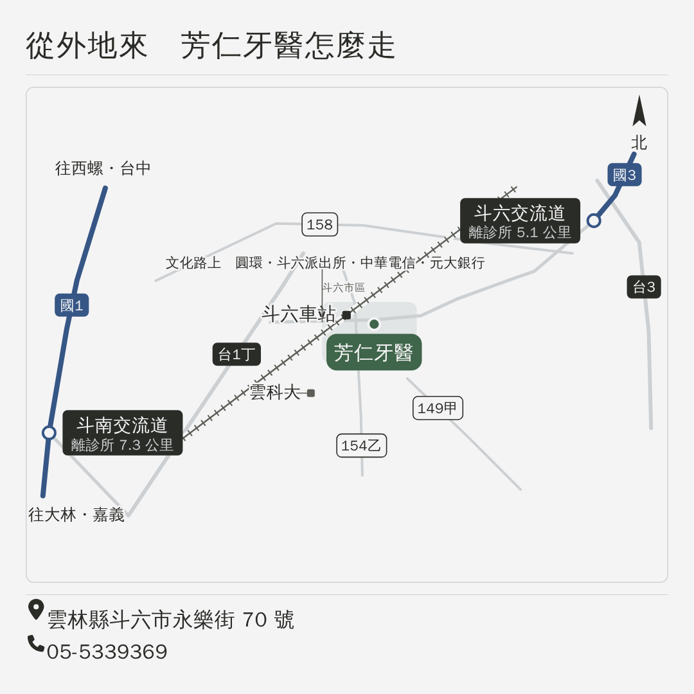
不標綠色路線：只剩「哪裡有什麼」，沒有「怎麼走」。不建議。


標題換一句（「芳仁牙醫 交通與位置」）、以及沒有標題 （地圖多 77px，但主頁那一格就不會自我介紹了）。
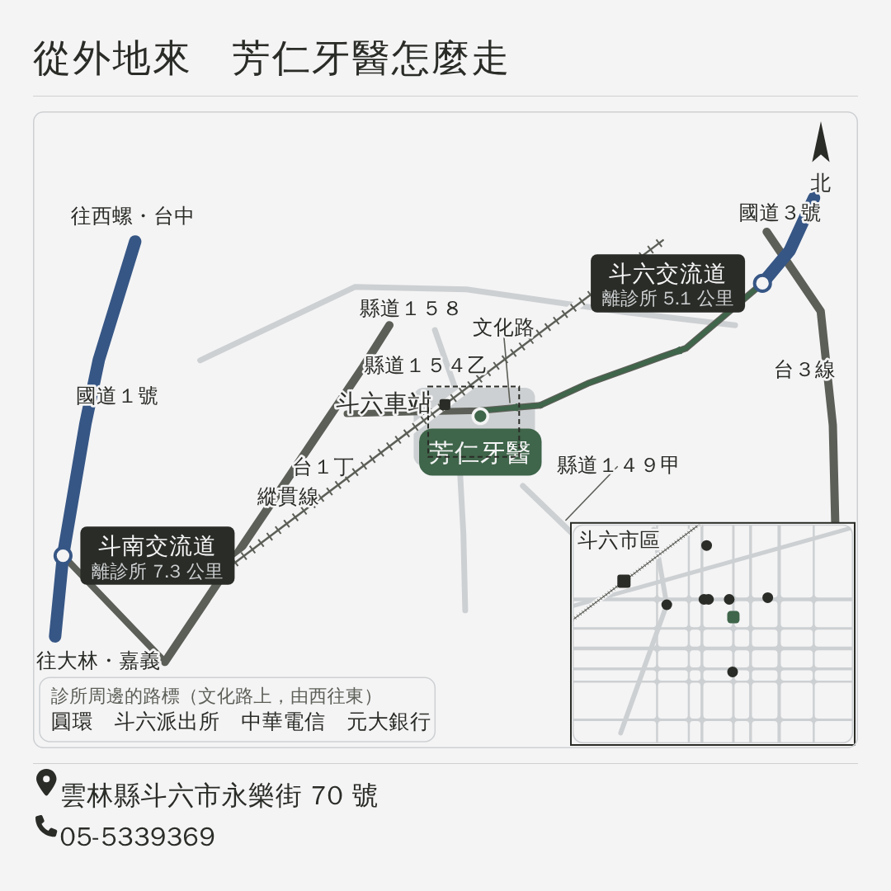
右下角開一塊市區小圖——不建議，兩個理由都量得出來：
小圖在小格 410px 上自己只有 129px、裡面的字會是 7px
（放得下但讀不到），所以它現在一個字都不排，而沒有字的小圖說不了話；
而且它蓋掉右下角。
⚠⚠ 第五版之後它更沒有理由了：開這塊小圖本來是為了讓那四個公家機關有地方站，
而現在它們在主圖上就站得下。
第二版那張市區圖留著，也可以當第二則

1.3 公里的市區圖沒有丟掉——它回答的是另一個問題（「到了斗六市區之後」），
而且那四個公家機關在那個尺度上是攤得開的。
⚠ 要不要做成第二則是你決定；但不要把兩張合成一張，那正是第一版的毛病。
✅ 你補的六張截圖：五個地標量出來了，還缺一個
量法不是目測：每一張截圖各自用它自己畫面上的街道當尺
（三民路、永樂街、永安路、大同路、中華路），橫向與縱向各算一次比例尺、對得起來才採用
——其中一張還拿洪揚醫院當第二個錨點回推內環路，算出 236 對上資料裡的 245。
⚠⚠ 前三個的南北位置是「貼到文化路上」的，不是量到的絕對值（量到 68~78、文化路寫著 95）：
三張截圖都顯示它們在同一條東西向的路上，而我自己描的那條文化路和它們差了約 20 公尺。
保住「它們都在文化路上」這個關係，比保住那 20 公尺有用——而圖上那一行講的正好就是這個關係。
圓環那一張有比例尺列（200 公尺 ＝ 230px ＝ 1.15 px/m），畫面上同時有斗六車站
可以當錨點，另外拿中華路與力行街兩條各自驗過（預測 1275／261，量到 1267／267）。
⚠⚠ 還缺一個：雲林縣政府
截圖有，但那一張沒有比例尺列，畫面上也沒有一個我敢用的錨點。所以我沒有擺。
⚠⚠⚠ 我沒有憑印象把它擺上去。一個擺錯位置的地標，比沒有那個地標更糟
——外地人會照著它轉錯彎。產生器遇到沒有座標的地標會直接停下來，不會偷偷畫。
要補很簡單：同一張再拍一次、讓比例尺那一列入鏡就夠了。
⚠ 補進來之後它會自己出現在圖上（門檻寫的是規則不是名單：放大過的那幾格是
「畫出來排得開就畫成 ■」，等比例那幾格是「離診所 1200 公尺以上」）。
⚠ 圖上每一樣東西的出處
這張圖不是描 Google 地圖描出來的街道圖，是示意圖：
國道、省道、鐵路收成幾條折線，方位與相對位置對得上，形狀不對。
⚠ 地理資料只有兩個檔：drafts/channels/far-map.json（廣域這一份）與
drafts/channels/far-city.json（市區的街道格網，第二版那張圖在用），
兩份都是從你給的截圖描出來的（比例尺是拿「診所↔斗六車站」回推的；
鐵路的方位另外驗過，北偏東 53 度，和斗六→石榴的真實經緯度算出來的 52.9 度對得上）。
⚠⚠ 有三處我自己也不確定，寫在檔案的 note 裡：
國道３與台３線在斗六東北角交叉（截圖上兩條都掛著「3」的標誌）、
斗南交流道的確切位置截圖上沒有標（所以接過去那一段是虛線）、
國道１號兩端的「往西螺・台中」「往大林・嘉義」是這張圖上唯一沒有量過的兩句字。
⚠ 顏色一個都沒有新增：路面、街廓、街名吃站上那張地圖的同一組變數，
診所是一般牙科的綠，牌子與國道是路牌藍，市區那一塊是站上的紙色。
這一版的「詳情」
⚠ 圖上的電話點不下去，說明欄裡的可以。
⚠ 兩條交流道的公里數與車站那「8 分鐘」都是從座標算的，不是打上去的
——圖上那兩塊牌子印的是同一個算式。
要你決定的
① 放大幾倍（建議 4 倍）——近的地標要撐開到什麼程度。
② 實際 ↔ 示意 的畫法挑哪一格（建議「偏示意」，⭐ 那張用的就是它）。
③ 雲林縣政府的位置——同一張截圖再拍一次、讓比例尺入鏡就好。
④ 這一則要放哪一格：三格已經被門診表（大格）與停車圖（小格左）佔滿，
小格右原本排給「主題與科別七科」。三條路：
擠掉七科／當第四則（主頁上要滑才看得到）／換掉停車那一張
（不建議）。我的建議是擠掉七科：七科那一張還沒做，而「怎麼過來」是外地人第一個問題。
⑤ 範圍、字級、標題、文化路那一行、市區小圖——上面每一格都擺出來了。
⚠ 「範圍」那一把只作用在等比例那幾格。
⑥ 圓環站的那條路叫什麼（截圖上這一段沒寫，中山路或台１丁我沒有確認）。
⑦ 那張 1.3 公里的市區圖要不要做成第二則。
⑧ 檔名——挑定了就改成拿得出去的名字（會是 fangren-route-1080.png）。
⚠ 縣政府補進來之前不會有定稿檔，守門擋著。